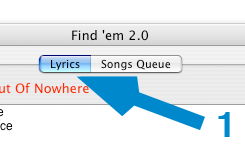
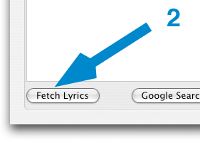
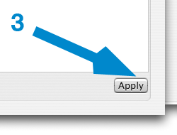
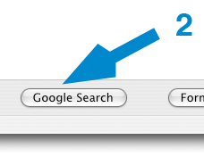
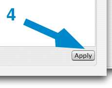

Fetching new lyrics for a song in Findem
This will show you how to try and automatically find lyrics for a song with Findem. This assumes you have added songs to Findem already; and you know how to use the panel.
To find lyrics for a song
- Click on the Lyrics tab
- Click on the Fetch Lyrics Button (if no lyrics are found, try Google Search below)
- Click Apply to apply the lyrics to all the songs in the panel



To find lyrics using Google
- Click on the Lyrics tab
- Click on the Google Search Button
- Once you find the lyrics you want, drag and drop them into the window
- Click Apply to apply the lyrics to all the songs in the panel


Next step
See also
Formatting LyricsAdding Songs
Removing Songs
Moving To The Next Song